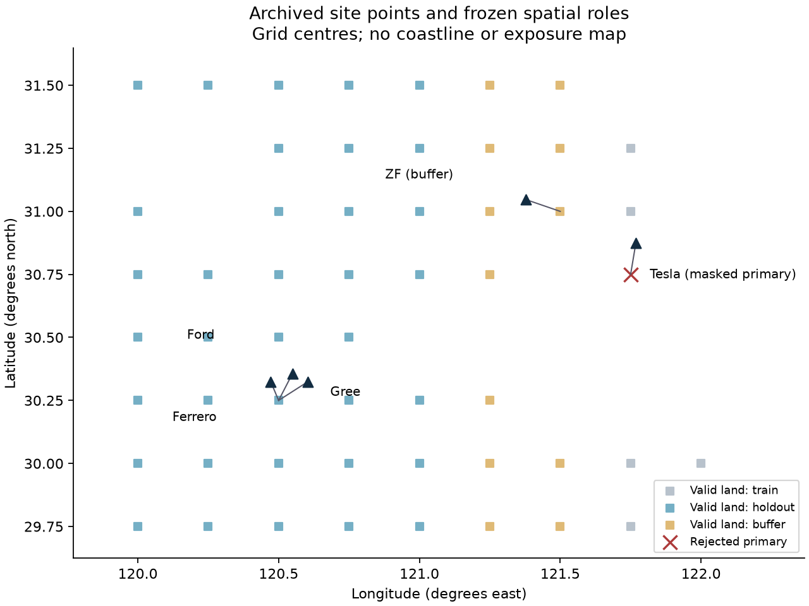
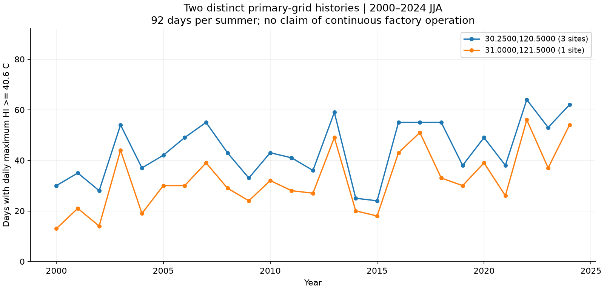
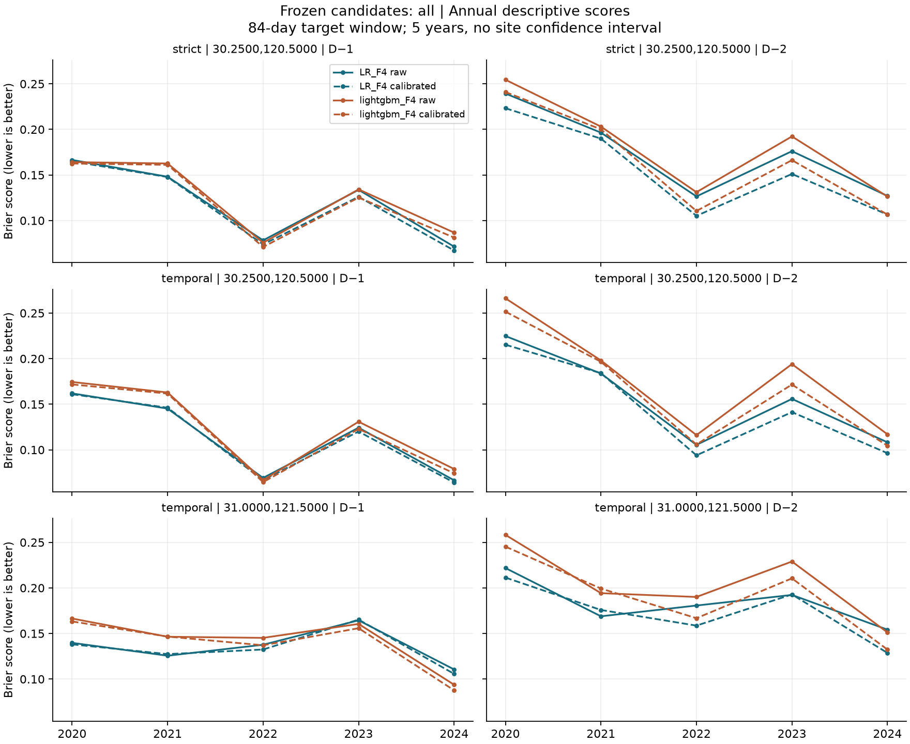
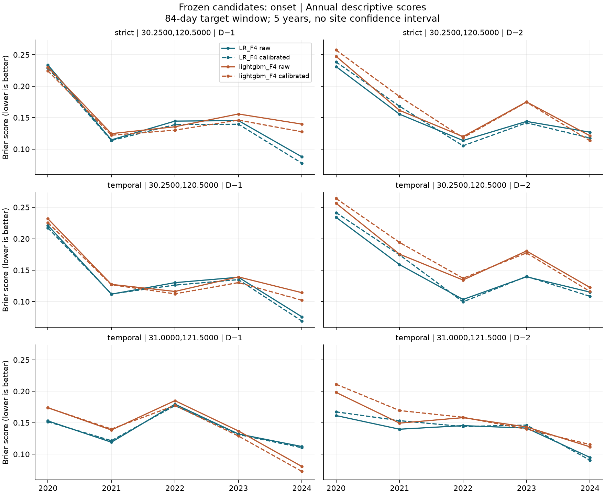

研究筛查，不构成企业风险判断。 ERA5概率历史回报没有验证实时可用性。HI阈值不等于职业安全或损失标准；尚无现场观测、岗位、设备或运营记录。现场建议全部待验证。
先看可用证据与边界
阈值事件：北京时间一天内，日最大HI≥40.6°C。窄屏可横向滚动表格。
完整历史：2000—2024，每夏92日，共4600格日。正式回报：2020—2024，每夏84日，共840个物理格日。杭州三厂共格，strict输出复用相同观测，均不增加独立样本。采埃孚在buffer，仅有temporal结果；特斯拉没有主格概率。

冻结格点角色和存档代表点。没有海岸线或厂内暴露含义；几何匹配不证明实测代表性。
两个主格的25年完整夏季历史。共享气候背景不能区分杭州三厂暴露；历史资料不证明企业连续运营。保留原研究结论与反例
第四阶段没有支持用LightGBM_F4替换冻结LR_F4。D−1湿度增量有回报证据，但D−2新发生缺少稳定改善证据。校准可改善总体却恶化新发生：杭州temporal D−2的LR BS为0.1502→0.1528，采埃孚为0.1365→0.1402。这里不进行当地模型、scope或阈值择优。
新发生风险集含D−1无事件的全部日期，包含00与01；D−2使用D−1状态只作事后分组。原始/校准概率并列，区域置信区间不能作为单厂区间。

全部目标日的逐年BS。五个年份的描述性结果；没有新增单厂置信区间。temporal和strict分别展示，不将差值解释为纯空间迁移损失。
新发生风险集的逐年BS。五个年份的描述性结果；没有新增单厂置信区间。temporal和strict分别展示，不将差值解释为纯空间迁移损失。五张场所证据卡
主格拒绝 · 结果缺失特斯拉上海超级工厂
特斯拉（上海）有限公司 · 上海市浦东新区江山路5000号
已有证据：工信部明确列出生产地址；与 OSM 上海超级工厂名称及经营实体对应。仅核验汽车厂区，未并入附近储能工厂；OSM 包围盒中心并非测量中心。
主格被陆地掩膜拒绝。存档边界约70.05%位于该主格最近中心分区、29.95%位于北侧有效格分区；这是几何比例，不是人员暴露或真实海陆比例。原北侧敏感格的历史均值10.52日、最长连续14日仅作存档敏感性说明，不能替代主结果。
主格被掩膜拒绝；历史阈值天数、连续日数和概率保持为空。缺值不表示低危害。
未验证路径：人员热负荷、冷却需求、潜在生产或质量影响均需现场证据。需要确认实际汽车制造岗位及工艺温控要求；未将附近储能工厂并入，也不假定具体生产线或工序存在。
缺失数据：当前运营状态、岗位班次、实际温湿度/WBGT、风与辐射、防护装备、冷却设施、能耗、质量/停机和损失资料均未取得。
补证队列：A：先解决位置、掩膜和代表性证据缺口；缺值不表示危害低。
待验证建议：核对现有汽车厂区边界、代表点与现场参考观测；调查主格拒绝的尺度与掩膜原因。若拟改变气候匹配方法，另立协议，保留本次空值基准，不将北侧格自动移为主格。
完整证据卡与来源
可用格点回报 · 描述性证据长安福特杭州工厂
长安福特汽车有限公司杭州分公司 · 浙江省杭州市前进工业园区长福杭路135号
已有证据：工信部生产地址与杭州市政府对杭州装配工厂的说明交叉对应，OSM 为杭州分公司工业用地。剔除搜索结果中的长安福特宿舍。
凹多边形的原包围盒中心在边界外；既有代表点取中纬度最大内部横截段的中点。四种既有几何情景未改变主格。与费列罗、格力共用一条气候序列，不能视为三份独立证据。
2000—2024的25个完整夏季，每季92日：日最大HI≥40.6°C的天数均值 44.12日；年度最小/中位/最大为 24/43/64日；季内最长连续 39日。原定典型年 2008，极端年 2022。这些是格点背景，不是企业历史损失。
查看固定F4模型回报（五年等权；BS越小越好）
未验证路径：人员热负荷、冷却需求、潜在生产或质量影响均需现场证据。公开来源支持汽车装配厂身份；具体工序、热源、班次和冷却条件仍需现场确认。
缺失数据：当前运营状态、岗位班次、实际温湿度/WBGT、风与辐射、防护装备、冷却设施、能耗、质量/停机和损失资料均未取得。
补证队列：A：复核代表点及实际作业区域；与另外两厂协同设计观测，但分别保留场所记录。
待验证建议：核实现场边界与代表点后，记录实际作业区的厂内外差异；三厂可以共享格点背景，不能共用一个厂内暴露结论。
完整证据卡与来源
可用格点回报 · 描述性证据费列罗杭州工厂
费列罗食品（杭州）有限公司 · 浙江省杭州市江东工业园区江东二路2727号
已有证据：政府抽检表中的生产者地址与企业官网杭州地址一致；OSM 为同名工业用地。上海贸易公司办公地址已区分。抽检表是公开标称生产者证据，非本项目现场审核。
存档边界全部位于主格最近中心分区；这不证明格点代表室内环境。与长安福特、格力共享格点，行业不同不产生额外气候样本。
2000—2024的25个完整夏季，每季92日：日最大HI≥40.6°C的天数均值 44.12日；年度最小/中位/最大为 24/43/64日；季内最长连续 39日。原定典型年 2008，极端年 2022。这些是格点背景，不是企业历史损失。
查看固定F4模型回报（五年等权；BS越小越好）
未验证路径：人员热负荷、冷却需求、潜在生产或质量影响均需现场证据。公开来源支持食品生产地址；具体产品线、温控设施、原料和成品敏感性尚未核实。
缺失数据：当前运营状态、岗位班次、实际温湿度/WBGT、风与辐射、防护装备、冷却设施、能耗、质量/停机和损失资料均未取得。
补证队列：A：核对生产与贸易办公地址边界，独立确认本厂观测覆盖。
待验证建议：在确认现场条件后，查明是否存在温湿度敏感的生产或储存环节；如存在，再同步记录工况和质量，不能预设冷链或产品损失。
完整证据卡与来源
可用格点回报 · 描述性证据格力杭州生产基地
格力电器（杭州）有限公司 · 浙江省杭州市钱塘区江东一路2345号
已有证据：证书列明空调生产企业及江东一路2345号；环评位置与 OSM 格力厂区相符。环评涉及园区内能源项目，未把其项目面积或设备坐标当作整厂信息；环评未标注 CRS 的坐标仅作位置佐证，气候输入采用 OSM WGS84。
存档边界全部位于主格最近中心分区；公开环评所述园内能源项目不能代表整厂面积、设备或暴露。与另外两家杭州厂共享格点。
2000—2024的25个完整夏季，每季92日：日最大HI≥40.6°C的天数均值 44.12日；年度最小/中位/最大为 24/43/64日；季内最长连续 39日。原定典型年 2008，极端年 2022。这些是格点背景，不是企业历史损失。
查看固定F4模型回报（五年等权；BS越小越好）
未验证路径：人员热负荷、冷却需求、潜在生产或质量影响均需现场证据。公开来源支持家电生产场所身份；不从行业名称或园内能源环评推定整厂工艺与冷却能力。
缺失数据：当前运营状态、岗位班次、实际温湿度/WBGT、风与辐射、防护装备、冷却设施、能耗、质量/停机和损失资料均未取得。
补证队列：A：明确整厂与园内项目的边界和设备归属，再确认观测位置。
待验证建议：核对实际生产、储存和公用工程区域；仅在取得真实设备与能耗资料后评估冷却相关路径。
完整证据卡与来源
可用格点回报 · 描述性证据采埃孚上海元江路厂区
采埃孚汽车零部件系统（上海）有限公司；采埃孚商用车底盘技术（上海）有限公司 · 上海市闵行区元江路4440号
已有证据：企业官网厂名、生产范围证书及政府中文实体/地址相符。两个同址企业按一个场所计数；OSM 边界只标注汽车零部件系统公司，不能保证覆盖另一法人所有生产单元。九泾路889号总部未计入工厂。
同址两个企业按一个场所计数；OSM边界仅标注其中一家，不能确认覆盖全部生产单元。气候主格属于buffer：有跨年temporal回报，没有该格strict H评价。
2000—2024的25个完整夏季，每季92日：日最大HI≥40.6°C的天数均值 32.24日；年度最小/中位/最大为 13/30/56日；季内最长连续 36日。原定典型年 2005，极端年 2022。这些是格点背景，不是企业历史损失。
查看固定F4模型回报（五年等权；BS越小越好）
未验证路径：人员热负荷、冷却需求、潜在生产或质量影响均需现场证据。公开证书和地址支持汽车零部件场所身份；未确认每个法人对应的全部车间、设备或岗位。
缺失数据：当前运营状态、岗位班次、实际温湿度/WBGT、风与辐射、防护装备、冷却设施、能耗、质量/停机和损失资料均未取得。
补证队列：A：先核清两个同址实体及生产单元的实际边界和观测覆盖。
待验证建议：取得各单元位置和使用关系后，再设计各自观测；现有buffer格不能补写strict分数，新增空间验证须独立设计划分。
完整证据卡与来源
下一步是补证工作，不是企业排名
A：核清边界与代表性；B：具备许可后建立可追溯的厂内外同步观测；C：在取得实际运营资料后检验影响路径。三类任务可并行，但没有现场证据前不估算损失或适应收益。独立气象观测和真实起报预报需另立前瞻验证；已使用的2020—2024不能再包装成盲测。
资料与复现